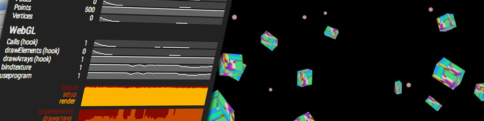

rStats

rStats aims to provide a way of measuring and visualizing performance of your code, mainly in apps based on an update loop, like games or interactive experiences.
Welcome!
It came to be when coding the Bumpy metaballs and SnowBox. I realised that the performance monitors I was using (the de facto standard mrdoob stats.js and the DevTools FPS Meter) are useful to keep an eye on your framerate and check if you're dropping frames. But once you're doing great and keeping it under 16ms, how much are you really using? Is my shader executing in 15.99ms, or is it a way smaller fraction of the frame time? Can I have an idea of how much headroom I still have left?
So rStats started as a revamp of the original stats performance monitor, adding performance.now() for finer measuring. After the naive measuring, I started adding more features. It takes after mrdoob stats.js, Jerome Etienne's threex.rendererstats and Ben Vanik's WebGL Inspector.
This page is from 2014, updated in 2026 for version 2 of the library. Every example below is rStats running live in this page, and only the ones on screen are running.
Let's get started
Install it with npm, or get src/rStats.js from the repository. It's a plain ES module.
npm i rstatsjsimport { rStats } from 'rstatsjs';
const rS = new rStats();This is the simplest way of creating an rStats object. Using it is as simple as placing the elements you'd like to measure in your update/render method:
function render() {
rS( 'frame' ).start();
/* Do rendery stuff */
rS( 'frame' ).end();
rS().update();
requestAnimationFrame( render );
}Notice that the value for frame is ~0. Since we're not doing anything in the function, it's exactly what we should expect. The graphs slowly accommodate to the max value: the scale grows and shrinks over time to adjust the vertical axis.
rS() returns the rStats object directly, and has an update() method that redraws the panel. Call this method at the end of your update function. rS( id ) returns a counter object. A counter has six updating methods:
- start(): starts counting performance time.
- end(): stops counting performance time and stores the ellapsed time since start() was called.
Good to measure render or texture update time. - tick(): stores the ellapsed time since tick() was last called. It's a shortcut for end(); start();
Good to measure times of loops or time between calls. - frame(): counts a frame, and stores the frames per second once every second.
Good for ... well, framerate, for instance. - set( v ): stores the specified value.
Good to store specific values, like draw calls or memory size. - mark( n ): counts something that happened, and stores how many per second once every second.
Good for things that don't follow the update loop, like collisions or messages from a worker.
Additionally, value() returns the current value of the counter.
Let's see a more extensive example:
function render() {
rS( 'frame' ).start();
rS( 'rAF' ).tick();
rS( 'FPS' ).frame();
rS( 'action1' ).start();
/* Perform action #1 */
rS( 'action1' ).end();
rS( 'render' ).start();
/* Perform render */
rS( 'render' ).end();
rS( 'frame' ).end();
rS().update();
requestAnimationFrame( render );
}In this example, we're using
- rS( 'frame' ).start()/end() to measure the actual execution time of our render method
- rS( 'rAF' ).tick() to measure how close to 16ms our requestAnimationFrame callbacks are being triggered
- rS( 'FPS' ).frame() to count the framerate (it's directly related to the rAF value, but we can calculate it independently)
- rS( 'action1' ).start()/end() and rS( 'render' ).start()/end() to measure execution time of those parts of the render
That's it. With these examples you can add all the counters you want and measure performance for anything you want.
Cleaning up a bit
Using short ids like rAF is useful when writing code, but it makes the panel look a bit awful. You can add captions for your counters when creating the rStats object:
const rS = new rStats( {
values: {
frame: { caption: 'Total frame time (ms)' },
raf: { caption: 'Time since last rAF (ms)' },
fps: { caption: 'Framerate (FPS)' },
action1: { caption: 'Render action #1 (ms)' },
render: { caption: 'WebGL Render (ms)' }
}
} );But wait, we can do even better. We can add alarms to quickly identify potential problems in the values we're monitoring. You can set up an alarm (the graph and the caption turn red) when values go over or below a specified threshold:
const rS = new rStats( {
values: {
frame: { caption: 'Total frame time (ms)', over: 16 },
raf: { caption: 'Time since last rAF (ms)' },
fps: { caption: 'Framerate (FPS)', below: 30 },
action1: { caption: 'Render action #1 (ms)' },
render: { caption: 'WebGL Render (ms)' }
}
} );Make the frame take too long,
to see the alarms
With these two changes, we get an alarm if the value frame is over 16ms, which means we're exceeding our frame budget and we're starting to drop frames. Similarly, we get an alarm if the value FPS is below 30, which would mean we're dropping so many frames we'll have a noticeably degraded experience. You can change this value to your acceptable framerate threshold :)
values is an object with the ids for the counters and their properties. The ids are case-insensitive. You provide caption, below and over. You can also add color and warningColor to specify your preferred colours for each graph.
You can also tell the meter to show an averaged value over some time. Specify average: true to enable averaging of samples. Add avgMs: 100 specifying the number of ms over which the value is averaged (default is 1000ms).
Even better, we can add grouping, so values are clustered in categories:
const rS = new rStats( {
values: {
frame: { caption: 'Total frame time (ms)', over: 16 },
raf: { caption: 'Time since last rAF (ms)' },
fps: { caption: 'Framerate (FPS)', below: 30 },
action1: { caption: 'Render action #1 (ms)' },
render: { caption: 'WebGL Render (ms)' }
},
groups: [
{ caption: 'Framerate', values: [ 'fps', 'raf' ] },
{ caption: 'Frame Budget', values: [ 'frame', 'action1', 'render' ] }
]
} );In this case, we group framerate-related values, and performance-related values. Clicking on the name of a group opens and closes that group.
Let's extract some useful data from our values
Since we're going to be measuring execution time for different processes that can be split in smaller actions, it might be interesting to see the percentage of the whole time that each step is taking.
const rS = new rStats( {
values: {
frame: { caption: 'Total frame time (ms)', over: 16 },
raf: { caption: 'Time since last rAF (ms)' },
fps: { caption: 'Framerate (FPS)', below: 30 },
action1: { caption: 'Render action #1 (ms)' },
render: { caption: 'WebGL Render (ms)' }
},
groups: [
{ caption: 'Framerate', values: [ 'fps', 'raf' ] },
{ caption: 'Frame Budget', values: [ 'frame', 'action1', 'render' ] }
],
fractions: [
{ base: 'frame', steps: [ 'action1', 'render' ] }
]
} );With this, we're telling rStats to add a stacked area chart: the value of the counter specified in base (in this case, frame) is the 100%, and the values for the counters in steps (action1 and render) will be scaled to that base.
Counting things that happen
Not everything follows the update loop. To know how often something happens, like a collision in a physics engine or a message from a worker, call mark() every time it does. The counter shows how many per second, and falls to zero when it stops happening.
const rS = new rStats( {
values: {
moves: { caption: 'Pointer moves / s' },
clicks: { caption: 'Clicks / s', interpolate: false }
}
} );
window.addEventListener( 'pointermove', function () {
rS( 'moves' ).mark();
} );Move the pointer, and click
The rate is calculated in update(), so keep calling it in your loop. With interpolate: false the counter shows what was counted in the last second, without scaling it.
How do I add other counters and values?
It's as easy as deciding what you want to measure and adding calls in your code. Wrap methods and statements between start() and end() to measure execution time. Use set() to store values and plot them.
Also, there's the possibility of adding plugins to your rStats object. There's one for three.js, one for WebGL and one for the memory of the browser. Check rStats.extras.js to get an idea of what they do.
Create your rStats object as usual, and add a plugins property:
import { rStats } from 'rstatsjs';
import { glStats, threeStats, BrowserStats } from 'rstatsjs/extras';
const glS = new glStats(); // init at any point
const tS = new threeStats( renderer ); // init after the renderer is created
const bS = new BrowserStats();
const rS = new rStats( {
values: {
frame: { caption: 'Total frame time (ms)', over: 16 },
fps: { caption: 'Framerate (FPS)', below: 30 },
raf: { caption: 'Time since last rAF (ms)' },
render: { caption: 'WebGL Render (ms)' }
},
groups: [
{ caption: 'Framerate', values: [ 'fps', 'raf' ] },
{ caption: 'Frame Budget', values: [ 'frame', 'render' ] }
],
plugins: [ tS, glS, bS ]
} );And update the render method. The three.js plugin is transparent, but the WebGL one needs the start of the frame to be signaled (it resets the counters).
function render() {
rS( 'frame' ).start();
glS.start();
rS( 'rAF' ).tick();
rS( 'FPS' ).frame();
rS( 'render' ).start();
renderer.render( scene, camera );
rS( 'render' ).end();
rS( 'frame' ).end();
rS().update();
requestAnimationFrame( render );
}The memory is read from performance.memory, which only Chrome has.
The panel
The panel is added to the top left of the page, over everything else. rS().hide() and rS().show() hide it and show it again, and rS().destroy() removes it. To have it somewhere else, like the examples in this page, pass the element where it should go as parent, and change its position from your CSS: the classes of the panel start with rs-.
Set userTimingAPI: true and everything measured with start()/end() is added to the User Timing API, so the counters show up in the Performance panel of the browser.
Ok. Is that it?
Yes, so far it is. See all of it working together in the demo, and get it from GitHub: spite/rstats. Ideas and suggestions go to the issues tracker.
Jaume Sanchez | clicktorelease.com